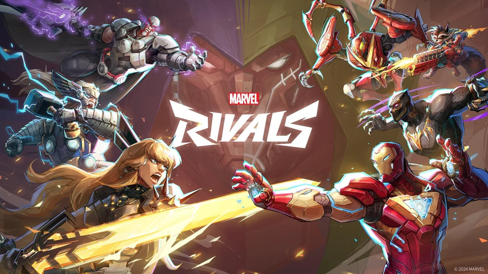

Marvel Rivals revela novo herói para o elenco
A NetEase confirmou mais um personagem jogável para o sucesso multiplayer.A desenvolvedora NetEase anunciou oficialmente um novo herói para Marvel Rivals. O personagem chegará em uma atualização futura e promete adicionar novas opções estratégicas para os jogadores.
Segundo os desenvolvedores, o novo herói contará com habilidades exclusivas e poderá formar combinações especiais com outros personagens já presentes no jogo.
A revelação aconteceu por meio de um trailer divulgado nas redes sociais, onde os fãs puderam ver uma prévia dos poderes e do estilo de combate do personagem.
A comunidade recebeu a notícia com entusiasmo, e muitos jogadores já começaram a discutir possíveis composições de equipe para as partidas competitivas.
Marvel Rivals continua crescendo em popularidade e recebendo atualizações frequentes, mantendo a comunidade ativa e engajada.
Mais informações sobre a data de lançamento do personagem devem ser divulgadas nas próximas semanas.
⬅ Voltar